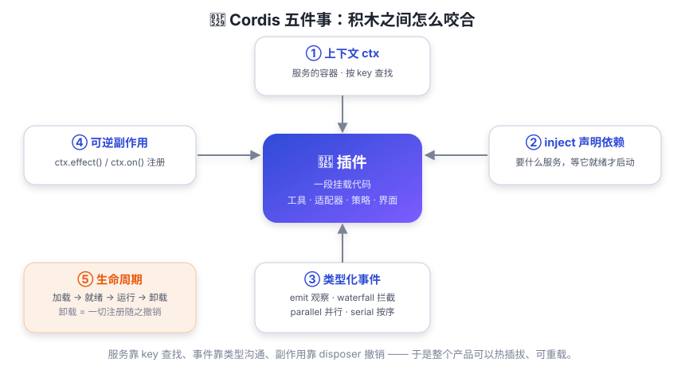

Cordis 五件事
乐高积木之间靠什么咬合？—— Cordis。五个核心概念，吃透它们就吃透了 dsh 的一半。
上一章说 dsh 是乐高积木。但积木之间靠什么咬合？不同厂商的积木为什么能互插？靠的是统一的凸点与凹槽标准——就像手机充电口，Type-C 一统江湖，你出门才不用带八根线。
Cordis 就是 dsh 的「咬合标准」——一个插件框架（dsh 以 vendor 方式引入它）。它的设计思想来自一篇论文《A Programming Paradigm for Spatiotemporal Composability》。名字很唬人（念出来能劝退 90% 的读者），但你只需要记住：插件往共享的「上下文」里贡献服务、事件和可逆副作用，积木就能彼此协作、也能干净地拆掉。

五件事，逐一说清
① 插件 —— 功能单元
插件可以是带可选 inject 和 apply(ctx) 的函数，
也可以是一个 Service 子类。它的生命周期（加载、就绪、卸载）由 Cordis 管理。
一个插件通常只做一件事：注册工具、注册适配器、监听事件、或提供一项服务。
② 上下文 ctx —— 服务的容器
每个服务占据一个稳定的 ctx.<key>：ctx.llm（模型）、
ctx.tools（工具注册表）、ctx.sessions（会话日志）、
ctx.shell（bash 执行）、ctx.fs（文件系统）……
关键规则：其他插件通过 key 查找服务，而不是 import 具体实现。 这就像插座按「标签」找插头：只要标签对，插头是谁家的都行 —— 这正是「换实现不用改调用方」的基础。
③ inject —— 声明依赖
插件声明自己需要哪些服务（inject 列表），Cordis 会等这些服务就绪后才启动该插件。 于是加载顺序由依赖关系自动推导，不需要手动编排启动顺序。 你不需要关心「谁先加载」，只需要说「我要什么」。
④ 类型化事件 —— 通信方式
服务之间用事件通信。事件名通过 TypeScript 声明合并注册（插件可以给别人的事件表「加新事件」而不改源包）， 并且每种事件有固定的分发模式：
| 模式 | 是否等待？ | 顺序 | 有返回值？ | 像什么 |
|---|---|---|---|---|
emit | 否 | 按注册顺序观察 | 否 | 广播喇叭：大家听，别插嘴 |
waterfall | 否 | 按注册顺序包装 | 是 | 接力棒：传下去或拍板短路 |
parallel | 是 | 并行观察 | 否 | 同时举手 |
serial | 是 | 按注册顺序执行 | 是 | 排队叫号 |
waterfall 值得单独记住，因为 dsh 的所有「拦截点」几乎都是它：
监听器收到 (...args, next)，调用 next() 把接力棒传下去并拿到下游结果；
不调用 next() 直接返回 = 短路，下游全部被跳过。
所以「想改行为的插件」在 waterfall 里等下游结果再包装，或直接拍板替换；
「只想看一眼的插件」必须记得 next()，否则会把整个链条掐断。
⑤ 可逆副作用 —— 注册与撤销
插件的所有「安装动作」（注册工具、挂监听器、装适配器）都是副作用，
通过 ctx.effect() 或 ctx.on() 完成。每个注册返回一个
disposer（释放函数）；插件卸载或重载时，Cordis 会按预期顺序撤销一切。
这解决了插件系统最头疼的问题：「拆积木」留下的残渣。 传统系统里卸载插件经常留下幽灵监听器、幽灵定时器；Cordis 里卸载 = 一切注册随之撤销，干干净净。
把行为封装为插件：工具流水线事件属于 ctx.tools，模型流式输出属于 ctx.llm，
实时 agent 协调属于 ctx.agents。拦截和策略优先用事件；直接能力调用优先用服务方法。